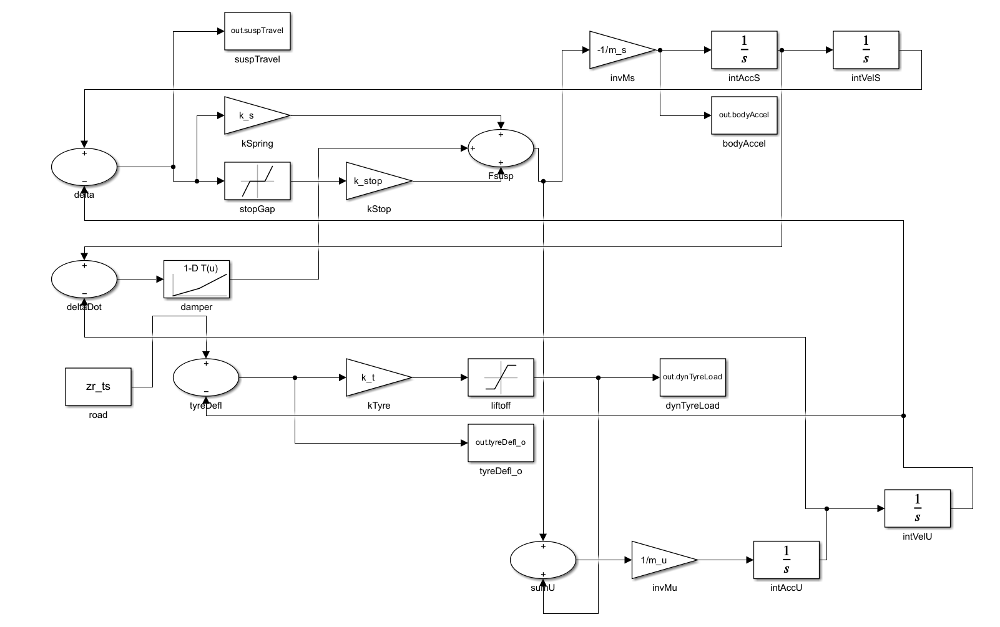
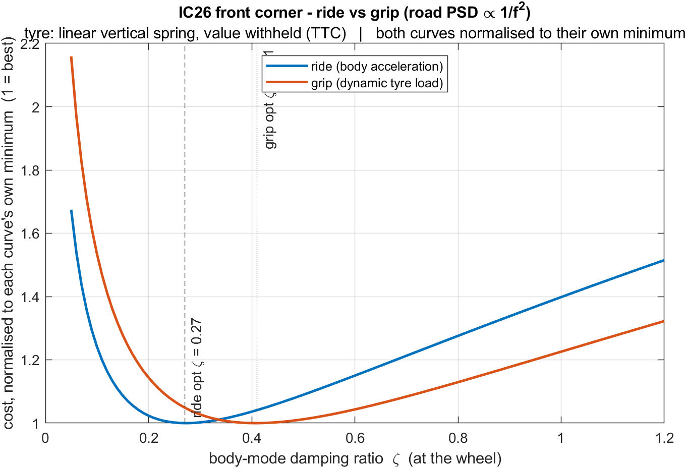
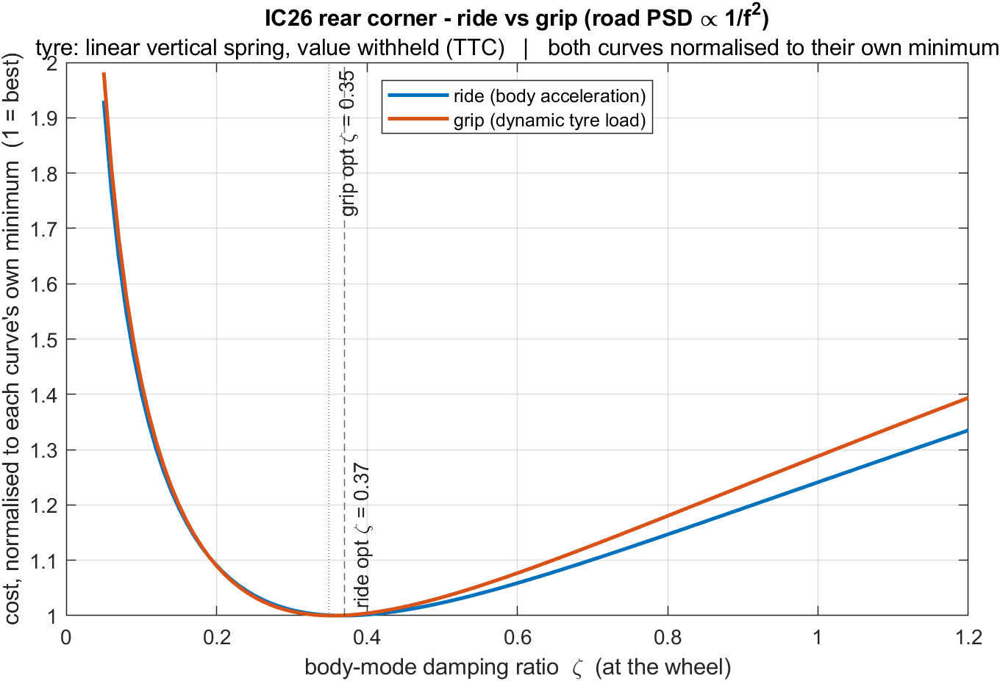
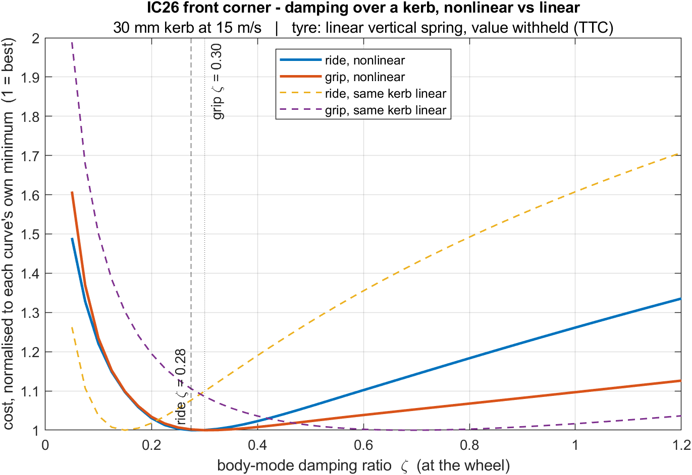
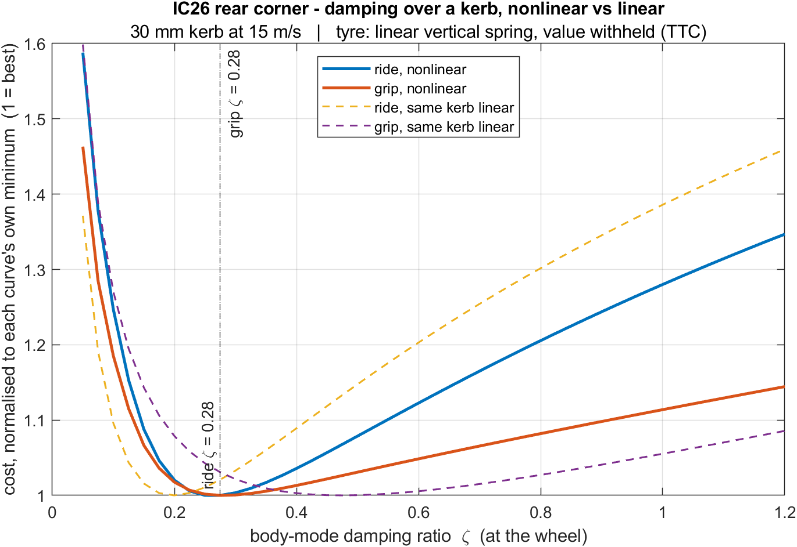

Ride and Damping Study – IC26
A quarter-car study of ride, grip and damping on the QMFS IC26 Formula Class car.
Project Overview and Scope
The QMFS IC26 is a combustion car that weighs 321 kg with the driver, has a 42% front weight distribution, a 1590 mm wheelbase, and 13-inch tyres. The project focused on analysing ride and damping characteristics in a simplified quarter-car model for front and rear corners.
A two-degree-of-freedom quarter car was chosen because its natural frequencies have a closed-form solution, so the hand derivation is the verification. Given access to the IC26 vehicle, the model can be validated physically by evaluating the damping spec through suspension tests and comparing it to the simulated results.
This project was undertaken to provide a foundational understanding of the ride and damping behaviour of the QMFS IC26, which acts as a starting point for a more comprehensive analysis of vehicle dynamics within the team.
Model Definition and Limitations
A quarter car represents one corner: a sprung mass (vehicle body) on a spring and damper, an unsprung mass (the wheel assembly) beneath it, and the tyre's own vertical stiffness between that and the road. It was modelled in two ways:
- Linear: I derived the equations of motion and solved them in closed form. This is used as the reference for the rest of the analysis.
- Nonlinear: I implemented it in Simulink, adding three things a transfer function cannot represent: tyre lift-off, rebound damping at (as a rule of thumb) twice the bump damping, and bump stops.

Front and rear corners are modelled separately. They are two independent corners, not a coupled car. Sprung corner masses are 49.71 / 72.69 kg front and rear, unsprung 17.70 / 20.40 kg, on wheel rates of 26.8 / 51.4 N/mm from spring rates of 103.0 / 53.5 N/mm.
The front is directly actuated with a motion ratio of 0.51, while the rear is a pushrod and bellcrank designed to a target ratio of 1 and measuring 0.98.
Derivation and Validation
The equations of motion and both natural frequencies were derived on paper before the model was built. The validation chain is as follows:
- Verified the natural frequencies by three independent routes: The roots of the characteristic quartic, the eigenvalues of the state matrix, and the standard separated approximations. The first two agree to around 1×10-14%. The approximations differ by 0.6% front and 1.3% rear. This is expected as the rear wheel rate is nearly twice the front.
- The Simulink model falls back onto the hand-checked linear one: With the nonlinearities switched off, they agree within 0.002%.
- Bounded the result with the rigid-tyre model frequency, 3.695 / 4.232 Hz: The limit the body mode approaches if the tyre is treated as infinitely stiff. It is constructed from the wheel rate and sprung mass alone.
- Nonlinearity changed the result: Once activated, the nonlinearities shift the optimum damping ratio downwards. The linear model is therefore not reliable for kerb inputs.
Finding 1: Rough-Road Damping
Sweeping damping against two costs over a statistical road spectrum: RMS body acceleration (ride, what the driver feels) and RMS dynamic tyre load (grip, how steady the contact patch is):
- Front: ride optimum ζ = 0.27, grip optimum ζ = 0.41 – a gap of 0.14.
- Rear: ride optimum ζ = 0.37, grip optimum ζ = 0.35 – a gap of 0.02.
Both costs rise at both extremes, so each has an interior optimum. Too little damping lets the body mode resonate; too much locks the suspension solid and transmits the road directly into both the body and the contact patch. The trade-off is the gap between the two minima.
The two axles conflict in opposite directions and by different amounts. At the rear a single setting is near-optimal for both costs. At the front the two minima are far enough apart to require a choice.


Finding 2: Kerb Response and Lift-Off
The sweep is the same, but the input changes. A single 30 mm kerb at 15 m/s, with the nonlinearities active. The grip optimum moves from 0.41 to 0.300 at the front, and from 0.35 to 0.275 at the rear. The kerb requiring less damping is the opposite of what was expected from the linear analysis.
The same kerb run with the nonlinearities switched off gives the opposite result: 0.70 front, 0.475 rear. The shift is therefore caused by the nonlinearities, not by the kerb input. The mechanism is tyre lift-off. Once the tyre spends time off the ground, damping cannot steady a contact patch that is not in contact.
To attribute the shift, the kerb was run four times at every damping ratio, each configuration adding one effect: linear, then tyre lift, then damper asymmetry, then bump stops. The change between successive configurations is attributable to the single effect added.


Extent of the Lift-Off Mechanism
Scanned over nine kerbs per axle (20/30/40 mm at 10/15/20 m/s):
- Front: 8 of 9 cases sort by airborne time. Every case requiring less damping is airborne longer than the case that does not. The boundary sits near 2.4% airborne.
- Rear: 7 of 9 cases sort by airborne time. One case matches the lift-off mechanism: 20 mm at 20 m/s never leaves the ground and requires more damping. The most airborne rear case does not, returning a tie.
Lift-off is therefore the mechanism at the front, and only part of it at the rear.
Kerb Loading at the Grip Optimum
- Airborne: 4.1% of the time at the front, 2.4% at the rear.
- Peak tyre load: 5.17× static at the front, 3.80× at the rear.
- Jounce travel used: 42% front, 36% rear.
- Time on the bump stops: 0.0% at both.
Peak tyre load reaches 5.17× static at the front. The bump stops do not engage on this kerb; reaching them requires a 65 mm kerb at the front or 77 mm at the rear, at 15 m/s. The loads are peak events during motion, and the results change based on the profile of the kerb.
Effect of Measured Tyre Stiffness
The tyre's vertical stiffness was originally an assumption. It was later found in the tyre test data (provided by Calspan for FSUK purposes) and measured directly, rather than derived from loaded radius. The assumption had been 20% soft, so every study was re-run from the measured baseline, which remains confidential.
The key findings of the study remained, while two secondary conclusions did not hold:
- "Lift-off sorts the kerb cases at both axles." → It sorts the front cases but not the rear.
- "The two axles reach the result by different mechanisms." → On the assumed tyre the rear behaved oppositely, while on the measured tyre both axles behave the same way.
Rim Width Assumption
The tyre was tested on 13×7 and 13×8 rims. The car now runs on 13×6 rims, and I do not have access to the latest data for them.
The original assumption was that the step down to six inches would be small, since the two tested widths agree to 1.2%. Checking this against the test data showed it was wrong. Comparing within a single tyre model, the 7 to 8 inch step moves vertical stiffness by 1.1–1.6%, but the 6 to 7 inch step moves it by 3.1–8.8%. A narrower rim on the same tyre model makes the tyre sidewalls bulge out, resulting in a softer tyre with a slightly narrower contact patch.
This was handled by sweeping rather than by applying a correction. The robustness sweep was widened to a floor below the worst plausible case, combining the lowest pressure with the largest rim softening present in the data. The finding holds at every point, ten of ten, on both axles.
Limitations
- A quarter car has no pitch, no roll and no load transfer: It cannot describe front-to-rear damping balance, which is the parameter a driver would feel. Finding 2 covers two independent corners, not a car.
- Cost values are not comparable between the two findings: A kerb is a transient, so its RMS falls as the simulation window lengthens and the response decays to zero. The road spectrum is continuous, so its RMS does not decrease. Every curve is normalised to its own minimum, as only the location of the minima is comparable.
- Single kerb shape: A 1-cosine bump is a simplified model of a kerb. Kerb profile can vary significantly.
- No existing damper spec is noted in the study: The study indicates the target damping, not the damping the car currently runs.
- Missing data for the recent rim choice: The data for the 13×6 rim width is unavailable.
- No experimental validation: The car requires physical testing to validate the simulation results.
Future Work
- No damper data: Fox VAN Performance at the front, Cane Creek DB Coil IL at the rear, but neither maker publishes force-velocity curves. The IC26 damping spec is not measured.
- The rim width: The rim width data is unconfirmed as demonstrated above.
- The running tyre pressure is assumed: Vertical rate rises roughly linearly with pressure across the range this car runs, making the tyre pressure an uncertainty in the model.